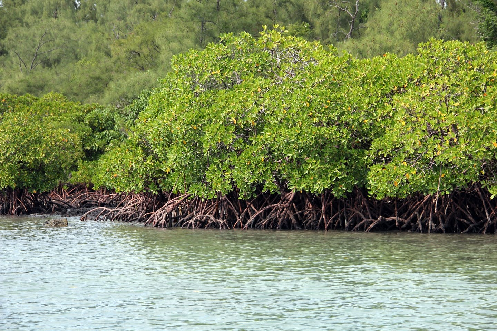

Mapping mangroves using remote sensing
April 13, 2021
1 Overview
Mangroves play a critical role in our social, economic, and ecological resources, but there are gaps in our understanding of carbon accounting and management. This is why we use field and remote observations to monitor its status…..

Figure 1.1: Mangroves Source: Pixabay
This tutorial uses different satellite data to map the current extent of mangroves using Sentinel 1 & 2 and historically using Landsat legacy.